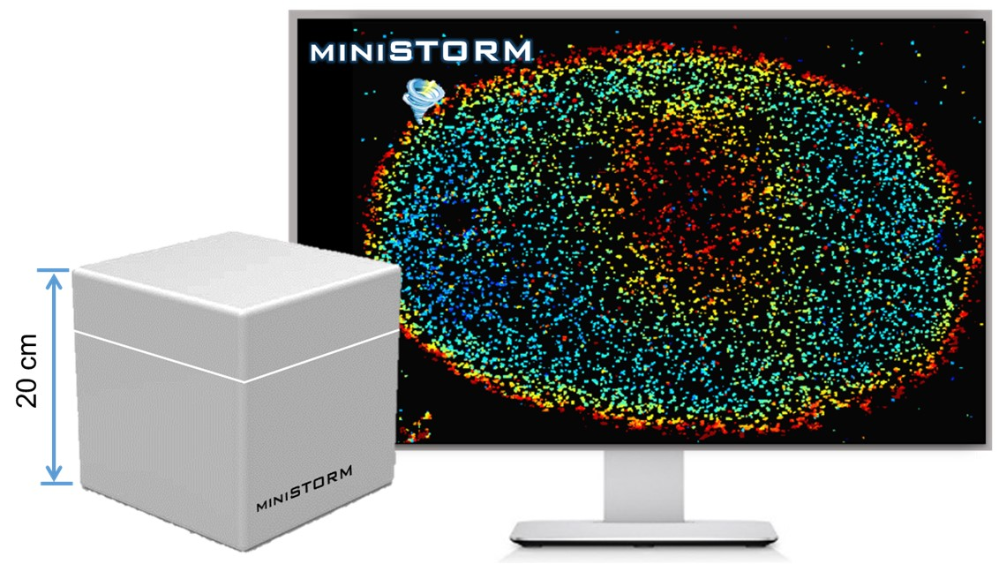

University of Illinois Urbana-Champaign
Hongqiang Ma's website
My research interest
My research mainly focuses on developing multiscale multimodal optical imaging techniques, bridging information from nanoscale to mesoscale, to significantly advance precision medicine. (1) High-throughput, super-resolution imaging platform to map the multiplex biomarkers of clinical tissue and biopsy with a nanoscale resolution. (2) High-resolution, multimodal, multiplex, mesoscope for information-rich spatial biology.
Nanoscopy
PathSTORM: high-throughput super-resolution imaging platform for pathological samples

Advances in super-resolution fluorescence microscopy have revolutionized biological imaging by overcoming the fundamental diffraction barrier, recognized by a Nobel Prize in 2014. In particular, single molecule localization microscopy (SMLM) such as (fluorescence) photo-activated localization microscopy [(f)PALM] and (direct) stochastic optical reconstruction microscopy [(d)STORM] is one of the simplest and most cost-effective approaches to achieve super-resolved imaging capability at a spatial resolution down to 5-10 nm. Despite its impact, it is generally deemed as a complex and low-throughput technique. The main rate-limiting factors are the small illumination field, the need to acquire tens of thousands of imaging frames to reconstruct an image and slow image reconstruction speed. It is also limited to imaging thin and transparent samples (bacteria, cultured cells). We aim to develop multi-color high-throughput STORM system that can be used to analyze clinically relevant pathological samples and apply machine-learning tools for automated analysis.
Relevant Publcations:
1. [Xu J#, Ma HQ#],et al. Super-resolution imaging reveals the evolution of higher-order chromatin folding in early carcinogenesis.
Nature Communications, 11: 1899, 2020.
2. Ma H,et al. WindSTORM: Robust online image processing for high-throughput nanoscopy.
Science Advances, eaaw0683, 2019.
3. Ma H,et al. Enhanced super-resolution microscopy by extreme value based emitter recovery.Scientific Reports, 11, 20417, 2021
miniSTORM

Although super-resolution microscopy is commercially available, it remains a high-end microscopy instrument only available in the core imaging centers at major academic institutions and a small number of well-funded laboratories around the world. The high cost of this technology limits its widespread use as a routine microscopy system. Small colleges and commercial laboratories often cannot afford such expensive instruments. We aim to develop miniSTORM, an affordable state-of-the-art nanoscopy with a spatial resolution one order-of-magnitude better than conventional light microscopy. The hardware cost will be 10 times lower than commercial systems. It is compact and can be put on a regular table top without a dedicated room and high-end optical table. It is highly robust and automated. Importantly, miniSTORM integrates artifact minimization modules that provide high-quality image, it will reduce the learning curve and the need for significant user expertise.
Relevant Publcations:
1. Ma H, Liu Y. Embedded nanometer position tracking based on enhanced phasor analysis. Optics Letters, 46, 3825-3828, 2021.
2. Ma H, Fu R. Xu J, Liu Y. A simple and cost-effective setup for super-resolution localization microscopy. Scientific Reports, 7(1): 1542, 2017.
3. Ma H, Xu J, Jin J, Huang Y, Liu Y. A simple marker-assisted three-dimensional nanometer drift correction method for super-resolution microscopy.
Biophysical Journal, 112: 2196-2208, 2017.